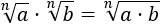
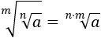
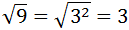

Escribir las raíces como potencias nos permite aplicar las propiedades de las potencias (las recordamos en el siguiente apartado). Esto es muy útil para calcular productos y cocientes de raíces e, incluso, potencias y raíces de raíces.
A continuación, recordamos los conceptos y propiedades que necesitamos.
Es la operación inversa a la potenciación. Y consiste en que dados dos números, llamados radicando e índice, hallar un tercero, llamado raíz, tal que, elevado al índice, sea igual al radicando.
Podemos escribir la raíz \(\sqrt[n]{a}\) como la potencia con base \(a\) y exponente \(1/n\):
$$ \sqrt[n]{a} = a^\frac{1}{n}$$
Recordamos las propiedades básicas de las potencias.
|
Producto
|
Potencia
|
|
Cociente
|
Exponente negativo
|
|
Inverso
|
Inverso
|
Si escribimos las raíces como potencias, obtenemos las siguientes propiedades:

El producto de raíces (del mismo orden) es la raíz del producto de sus radicandos.
El cociente de raíces (del mismo orden) es la raíz del cociente de sus radicandos.
Podemos introducir el exponente de una raíz como el exponente del radicando.

La raíz de orden de la raíz de orden es la raíz de orden .
Nota: en el Ejercicio 5 tenemos otras dos propiedades.
Nota previa: cuando haya dos raíces, escribiremos sólo la positiva.
En todos los ejercicios se tiene que simplificar el resultado.
Calcular los siguientes productos de raíces cúbicas y quintas:
Aplicamos la propiedad del producto de raíces.
Observad que la raíz se cancela porque el radicando es una potencia con exponente 3 y el orden de la raíz es 3.
Calcular los siguientes cocientes de raíces cuadradas y cúbicas:
Aplicamos la propiedad del cociente de raíces.
Calcular el siguiente cociente de raíces cuadradas y cúbicas:
¿La suma de raíces de orden es la raíz de orden de la suma de sus radicandos?
La propiedad no es cierta. Veamos un contraejemplo:
Sin embargo,
Demostrar las siguientes propiedades:
Propiedad 1:
Propiedad 2:

Vamos a operar en el lado izquierdo hasta transformarlo en la expresión del lado derecho.
Escribimos la raíz como una potencia:
Multiplicamos los exponentes (potencia de potencia):
Hacemos el paso inverso:
Escribimos la potencia como una raíz:
Escribimos las raíces como potencias:
Multiplicamos los exponentes:
Ahora, deshacemos el cambio:
En adelante, lo que haremos es escribir las raíces como potencias con exponente fraccionario para aplicar las propiedades de las potencias.
Calcular la siguiente potencia:
Tenemos una raíz cuadrada escrita en forma de potencia:
Sabemos que la raíz cuadrada de 9 es 3, pero podemos escribir 9 como para dejar claro en la raíz cuadrada de un cuadrado se pueden eliminar la raíz y el exponente:

Escribir la potencia como una raíz:
Recordad la propiedad:
Como el denominador del exponente es 4, es una raíz de orden cuarto (raíz cuarta):
N o podemos simplificar más la raíz.

^c = a^(b·c)")